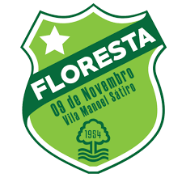
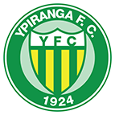

-
ABC

- 1915
ABC clube do povo Campeão das multidões Serás sempre o mais querido Pelos nossos corações Eu me orgulho ser da terra potiguar Quando vou para o gramado Ver o ABC jogar É bola pra aqui É bola pra lá A turma joga com classe E com raça pra ganhar O adversário fica no campo perdido Salve, o mais querido Salve, o mais querido Salve, o mais querido Salve, o mais querido
-
Aparecidense
- 1985
É o azul e branco, que faz o meu coração bater pelaAparecidense que nasceu pra vencer. É o azul e branco, que faz o meu coração bater pela Aparecidense que nasceu pra vencer. Desde 1985 a Aparecidense faz parte da nossa vida É o orgulho da cidade de Aparecida É garra, é amor, é a nossa emoção Sou Aparecidense de coração É garra, é amor, é a nossa emoção Sou Aparecidense de coração Tocando de pé em pé A gente chega junto com a Aparecidense Onde o azul e branco estiver
-
Athletic
- 1909
Nos fastos esportivos de São João Glorioso clube, o teu nome rebrilha! Do futebol nos campos, tua ação Da honra e da lealdade segue a trilha! Em nosso peito altivo pulsa forte, Um coração todo alve-negro todo! Inspira-nos tuas cores o denodo Para as refregas túrbidas do esporte! Athleticanos somos valorosos! Nosso clube com ardor defenderemos! Havemos de dizer sempre garbosos: Athleticanos somos e seremos. No teu gramado, em Matozinhos, quando enfrentas o inimigo, na peleja, nossa alma vibra e espera, palpitante, a hora triunfal que te deseja. Sabes vencer, também sabes perder: reconhecer do contendor os méritos E não é fácil tais virtudes ter, tais dotes de equilíbrio – dons eméritos! As cores do teu lábaro sagrado São respeitadas, valorosa são. E cada filho teu tem desenhado de “branco “ e “preto” o próprio coração. Inúmeros troféus tens conquistado no rude campo aberto dos torneios. De glórias tens o nome aureolado, De belos feitos os teus fastos cheios! Alve-negro pendão, salve tremula! Nas tuas dobras vívidas se agita, quando a brisa as desfralda e, branda, oscula e alma de campeão que em ti palpita. As cores do teu lábaro sagrado São respeitadas, valorosa são. E cada filho teu tem desenhado de “branco “ e “preto” o próprio coração.
-
Botafogo-PB
- 1931
Botafogo Paraibano Você é o mais Belo e glorioso Que enche de alegria o seu povo Com tantas glórias e tantas vitórias! Branca, preta e vermelha Do tricolor do contorno são as cores Que vibram nas mãos dos torcedores Em forma de lindas bandeiras Vamos ganhar o jogo sim! Vamos dar um olé! Encher os olhos desse povo todo Que está lotando o Almeidão! O nosso Tricolor é sempre campeão Porque nosso timão tem muito mais vigor!
-
Caxias
- 1935
Ser Caxias é ser desportista E um bravo honrador da história Seguir sempre com muita justiça A longa impávida senda da glória O passado, o suor e a esperança, Um presente de glória e emoção Jubilando os nossos desportos, consagrados por esta nação. Meu sangue é grená e azul Aliado ao branco pureza Me dá vida e orgulho, ô Caxias A minha alegria é a tua grandeza. Ô bandeira em punho desfraldada Tu hás de muito brilhar nosso povo cheio de fervor Na alegria ou na dor há de sempre gritar...
-
Confiança

- 1936
Quem é o campeão dos campeões, que no gramado mantém sua glória, é a Desportiva Confiança, dos operários tem o nome a vitória, sua bandeira com alvi-anil, sou Confiança em todo Brasil, Tua luta continuará, outras taças, Iremos conquistar, essa é a realidade, quem foi rei sempre é majestade.
-
CSA
- 1913
Pela pátria, na vida esportiva É que vamos sempre conquistar Nossa glória da luta deriva É o campeão dos campeões CSA Azulinos impávidos e fortes Enfrentemos os nossos rivais Nosso time não tem adversários Não seremos vencidos jamais Centro Sportivo Alagoano No Mutange eterno vencedor Se tremulas a tua bandeira Alvi-celeste é com amor Nesse anseio infinito de glória Esse Centro Sportivo não tem A vaidade que é sempre ilusória E que nunca elevou à ninguém Vamos todos em busca das vitórias Com o coração na ponta das chuteiras União e Força CSA Azul e Branco a vida inteira Centro Sportivo Alagoano No Mutange eterno vencedor Se tremulas a tua bandeira Alvi-celeste é com amor
-
Ferroviária
- 1950
O Povo está Feliz Tem Futebol com a Ferroviária da Morada do Sol Avinhado na camisa que emoção Salve Ferroviária do meu Coração Ferroviária, amo você Em qualquer hora e tempo Seu lema é vencer Araraquara, venturas mil Viva Ferroviária um orgulho do Brasil.
-
Ferroviário
- 1933
Salve, Salve FAC É o time dos maiorais E é Ferroviário Atlético Clube O dono das iniciais Somos companheiros inseparáveis Na alegria e na tristeza Com esse vermelho, preto e branco Que traz o símbolo da beleza Vamos marchar para a luta Continuar nossa jornada Não enxergamos sacrifício Enfrentamos qualquer parada O Ferrão foi e será O maior do Ceará!
-
Figueirense

- 1921
Avante Figueirense Pra frente Furacão S’embora Esquadrão de Aço És tesouro do meu coração Tua torcida é garra, é empolgação Vejo em ti pujança De um grande esquadrão Por ti torcemos Por isso somos alvinegros A força do Scarpellão Por ti torcemos Por ti vibramos Figueirense És o nosso campeão
-
Floresta
- 1954
Foi no dia Nove de Novembro Nasceu o meu time pra ser campeão É nosso Floresta Esporte Clube Vai pra cima deles força verdão Meu time verdão de guerreiros No Ceará não tem pra ninguém Vamos Floresta querido Fazer a alegria também Avante sempre Verdão Pra sempre ser Campeão Avante sempre Verdão Pra sempre ser Campeão
-
Londrina
- 1956
O azul celeste da tua bandeira Simbolizando o céu do paraná O branco, a paz de tua gente ordeira Que em outras terras sei que igual não há. O teu brasão resume a tua história Na altivez da rama do café Tu surgiste oh! grande Londrina do seio de um povo que tem muita fé. Refrão Londrina... Londrina... Londrina... Estás presente em cada coração Caçula-gigante nasceste E hoje és o destemido tubarão. Londrina... Londrina... Londrina... Nossa torcida vibra em cada emoção E o que importa é o ideal de vitória Pois para nós, tu serás sempre campeão. Meu tubarão, time de tantas glórias É uma força do norte ao sul Venceu fronteiras e já fez histórias Tua camisa branca e azul. És o orgulho de uma cidade Que se formou na era do café Tu surgiste oh! Grande londrina do seio de um povo que tem muita fé.
-
Náutico

- 1901
Da união de duas cores mágicas Nasceu a força e a raça Vermelho de luta Branco de paz Quem olha não esquece jamais Da união de sete letras mágicas (bis) N.á.u.t.i.c.o Nasceu um time que encanta Que manda e desmanda Que faz o nosso Carnaval Náutico teu caminho é de luz Tua força, tua garra Fascina e seduz No meu coração Brotou o esplendor De te adorar com emoção No meu coração Brotou o esplendor De te adorar com muito amor Lá, lá, lá, lá, lá, lá, lá, lá, lá, lá Lá, lá, lá, lá, lá, lá, lá, lá, lá, lá No meu coração Brotou o esplendor De te adorar com emoção No meu coração Brotou o esplendor De te adorar com muito amor
-
Remo

- 1905
Atletas azulinos somos nós, e cumpriremos o nosso dever, se um dia quando unidos para a luta, o pavilhão sabemos defender. Enquanto a azul bandeira tremuleja, o vento a beija, como a sonhar, horando essa bandeira que paneja, nós todos saberemos com amor lutar. E NÓS ATLETAS TEMOS VIGOR, A NOSSA TURMA É TODA DE VALOR (BIS). Nós todos no vigor da mocidade, vamos gozando nessa quadra jovial, e nós os azulinos da cidade, rendemos viva ao nosso ideal. Em cada um de nós mora a esperança, nossa pujança, nosso ideal, e como somos do CLUBE DO REMO o nosso amor diremos que não tem igual. E NÓS ATLETAS TEMOS VIGOR, A NOSSA TURMAÉ TODA DE VALOR (BIS).
-
Sampaio Corrêa

- 1923
Sampaio Corrêa, do nosso esporte o mais antigo esquadrão; Sua camisa encarnada, verde e amarelo; Veste gigante do esporte em constante duelo. Sampaio Corrêa, time de skol Maior torcida tradição no futebol.
-
São Bernardo
- 2004
Nasceu para jogar e crescer Enfrentar o adversário sem nada temer Atravessando fronteiras Superando barreiras Sua meta é vencer ou vencer A conquista sempre será visão Para o Tigre que surgiu Para ser campeão, a sua garra no entanto Faz gigante no campo e torcida do adversário tremer É show de bola é São Bernardo chegou Uma alegria quando grita-se gol Um futebol de ataque o forte do ABC É São Bernardo é vencer ou vencer
-
São José
- 1933
Vai, pelo céu do Brasil, Vai, nesse azul de anil, AGUIA DO VALE voou... Buscando com suas garras mais um gol (Goooool...!) Vai, Glorioso esquadrão, Vai, o grande Campeão Mostrar a todo Brasil O que é A sua forca e garra Oh! Grande São José Você sempre será Orgulho do País Contigo São José Me sinto tão feliz Nasceu para vitorias És nato campeão Orgulho da cidade E de toda Nação AGUIA DO VALE eu sei, Terás vitórias mil Irás sobrevoar Os Campos do Brasil Não ha quem te agüente, Es forte, es varonil Campeão do meu Brasil...
-
Tombense

- 1914
O vermelho é garra e coragem O branco muita paz e união Vamos Tombense Vamos jogar para vencer Em toda a partida Jogaremos com você Vamos Tombense Força, raça, amor e fé Estaremos com você Aonde você estiver Somos Tombense não importa o lugar Seja no céu, na terra ou em qualquer lugar Somos Tombense não importa o lugar Seja no céu, na terra ou em qualquer lugar
-
Volta Redonda
- 1976
Entra em campo o esquadrão de aço Equipe do Voltaço Fundado em 76 Seus atletas estão lutando pela vez. Time de Volta Redonda Terra de trabalho e paixão Seus torcedores garantem Manter sua tradição. O município é seu braço A indústria o coração Além de recordista de aço Quer ver o seu clube campeão. Sua camisa, seu escudo, suas cores Gritam gol Suas bandeiras coloridas Agitando a torcida Tão vibrante aguerrida Abre passagem com ideal A meta perseguida é a conquista De glória nacional.
-
Ypiranga
- 1924
O Ypiranga surgiu para a vida Com a missão de trazer, pelo esporte, A pujança corpórea reunida A beleza do espírito forte. O valor alcancemos, confiantes, E sejamos, portanto, esforçados; Vencedores, fiquemos constantes: Não seremos jamais derrotados Nas planuras e serras tão lindas Ypiranga! Ypiranga! em louvor! Quer na paz, quer na luta, bem vindas As vitórias da força e do amor! Nas planuras e serras tão lindas Ypiranga! Ypiranga! em louvor! Quer na paz, quer na luta, bem vindas As vitórias da força e do amor! Nossas cores, na pátria inspiradas, Têm o verde da terra e do mar; No amarelo refulgem as fadas Do esplendor e riqueza sem par E no campo se vêem, promissoras, As defesas…e o ataque que avança… Eia, vamos gentis torcedoras, Para a glória da nossa esperança!